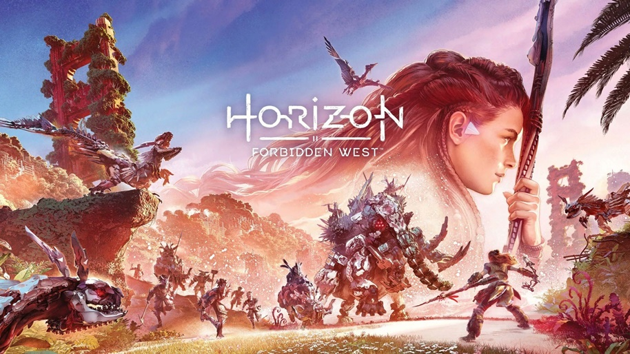

1. Project EVE

Em 2019 foi falado sobre o seu desenvolvimento e após dois anos durante a Playstation Showcase dia 9 de setembro 2021, foi revelado o que vem por aí em Project Eve, novo jogo da produtora coreana Shifit Up para Playstation5 eperado para 2022. Um trailer de 4 minutos foi exibido, mostrando um pouco do visual, atmosfera e gameplay de exploração e combate.
Em um futuro não muito distante, a humanidade é expulsa da Terra após perder a batalha contra os invasores chamados NA:tives. Para reconquistar o planeta, o jogador assume o papel de Eve, a sobrevivente do esquadrão de paraquedistas da colônia, e deve lutar contra inimigos poderosos com novos companheiros. Convidamos você a viver a aventura de Eve em meio a criaturas desconhecidas em uma Terra destruída. No controle de Eve, você chega um passo mais perto do segredo escondido nesse mundo incomum. O combate em Project Eve é deliberado — incluindo ataque, defesa e evasão — enquanto permanece fluído e estimulante. A única maneira de sobreviver é entender os padrões de ataque de vários inimigos e contra-atacar no tempo certo".
Disponivel para PlayStation 4, Xbox One, Microsoft Windows, PlayStation 5
Trailer Oficial2. Forspoken
Forspoken é um futuro jogo eletrônico de RPG de ação que narra a jornada de Frey, uma jovem nova-iorquina transportada para a linda e cruel terra de Athia, desenvolvido pela Luminous Productions e publicado pela Square Enix. Será lançado em 11 de outubro de 2022 para Microsoft Windows e PlayStation 5.
Em busca de um caminho de volta para casa, Frey precisa usar suas habilidades mágicas recém-descobertas para explorar vastas paisagens, enfrentar criaturas monstruosas e derrotar poderosas matriarcas, conhecidas como Tantas.Acompanhada de um bracelete senciente e com um arsenal de magias recém-descobertas, a heroína, ainda relutante, se vê em uma encruzilhada e é a única esperança dos cidadãos de Athia, ao mesmo tempo em que busca respostas e uma forma de voltar segura para casa. O jogo é um RPG de ação em mundo aberto e chama a atenção tanto pelos combates em alta velocidade como também pelos visuais e exploração.
Trailer Oficial3. Gran Turismo 7

Gran Turismo 7 lançado em 4 de março de 2022 é um jogo eletrônico de corrida desenvolvido pela Polyphony Digital e publicado pela Sony Interactive Entertainment. É o oitavo título da linha principal da série Gran Turismo. Seja você um piloto competitivo ou casual, colecionador, tuner, designer de visuais ou fotógrafo — encontre seu caminho com um número impressionante de modos de jogo, incluindo favoritos dos fãs como Campanha GT, Arcade e Escola de Pilotagem.
Com a reintrodução do lendário Modo de Simulação GT, compre, modifique, pilote e venda em uma campanha solo recompensadora enquanto desbloqueia novos carros e desafios. E, para quem curte duelar com outros pilotos, é possível aprimorar suas habilidades e competir no Modo GT Sport.
Trailer Oficial4. Horizon Forbidden West
Horizon Forbidden West é um jogo eletrônico de RPG de ação desenvolvido pela Guerrilla Games e publicado pela Sony Interactive Entertainment. Foi lançado em 18 de fevereiro de 2022 para PlayStation 4 e PlayStation 5. Explore terras distantes, enfrente máquinas maiores e mais imponentes, e encontre novas tribos incríveis ao retornar o futuro distante e pós-apocalíptico de Horizon.
A terra está morrendo! Tempestades implacáveis e uma praga incontrolável devastam o que sobrou da humanidade enquanto máquinas assustadoras vagam por territórios próximos. A vida na Terra segue rumo à outra extinção, e ninguém sabe o porquê. Cabe a Aloy descobrir os segredos por trás dessas ameaças e restaurar a ordem e equilíbrio ao mundo. Ao longo do caminho, ela reencontrará velhos amigos, forjará alianças com novas facções e descobrirá o legado do passado antigo enquanto tenta se manter um passo à frente de um novo inimigo.
Trailer Oficial5. Fifa 23
Esperado para o final de Sentembro de 2022 o Fifa 23 terá novos modos de competição como Conmembol Libertadores, Recopa, Sul-Americana e sim vai ter o Copa do Mundo sim, o que não se sabe é se vai ser detro do propio game ou se farão uma versão separa para isso como fizeram com o Fifa 14.
A EA Sports está estudando uma forma de melhorar o modo do Ultimate Team, muitos fâs estão pedidindo prarq eu seja diminuido o tempo dos squad battles, no Fifa 23 jogadores de PlayStation 5, Xbox Series X e PC terão a mesma varsão e serão adicionados dois cards de herois no Ultimate Team um card do Dirk kuyt e um card do Peter Crouch.
Trailer Oficial